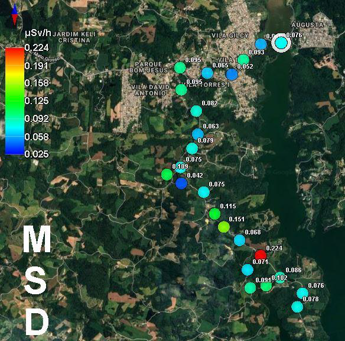

Evaluation of radon, radium and gamma radiation at the environmental preservation area of Passaúna river, Brazil (Brazilian Journal of Radiation Sciences)

Resumo em Português
O objetivo desta pesquisa foi avaliar os níveis de radiação natural na Área de Proteção Ambiental (APA) do Rio Passaúna, região de Campo Largo, no estado do Paraná, Brasil. Medições de radiação gama foram obtidas com espectrômetro gama, e para as medições das concentrações de rádio e radônio em solo e água foram utilizados o monitor AlphaGUARD e seus acessórios. Até o momento, foram analisadas 4 amostras de água do Rio Passaúna, 2 amostras de água de poço da região, 2 amostras de um lago secundário e 4 amostras de solo.Os resultados mostram que as medições gamaespectrométricas encontraram valores variando de 0,052 a 0,204 μSv/h. No entanto, os resultados das concentrações de radônio no solo foram significativos, uma vez que os valores obtidos variaram de 110 ± 1,30 kBq/m³ a 9 ± 0,80 kBq/m³. Esses resultados podem ser comparados com as medições de radônio e rádio obtidas nas águas de poço, que indicaram valores superiores ao limite nacional de 0,5 Bq/L estabelecido pelo Ministério da Saúde do Brasil e pela Organização Mundial da Saúde. Os valores nas águas do lago foram inferiores aos limites estabelecidos. Mais medições são necessárias para mapear a região, compreender os níveis de radiação e correlacionar as medições de água e solo com as feições geológicas do local.